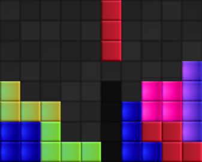

Instruction
Your goal is to arrange falling blocks in such a way as to create complete horizontal lines on the board. The blocks can be rotated and moved left or right. When you manage to create a full line, it will be cleared, and you will earn points. The game ends when the blocks stack up to the top of the board. Try to score as many points as possible and keep the board as empty as you can. Good luck!
